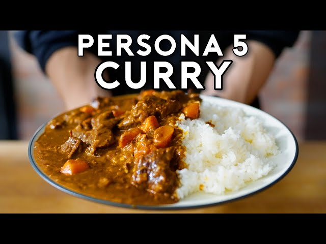

Persona 5 Curry
Index

Description
The famous curry from Leblanc Cafe, Joker's place of stay in Persona 5.
Ingredients
Dry Roux
- 4 Tbsp. All-purpose flour (36g)
- 2 tsp. Cumin (4g)
- 2 tsp. Coriander (4g)
- 2 tsp. Turmeric (4g)
- 1 tsp. Cardamom (2g)
- 1 tsp. Cinnamon (2g)
- 1 tsp. Chili powder (1g)
- 1 tsp. Nutmeg (1g)
- 1/4 tsp. Clove powder (0.5g)
- 1/4 tsp. Black pepper (0.5g)
Meat
- 1 tsp. Vegetable oil
- 500 G. Stew beef, cubed
- 1 Bay leaf (4g)
- 1 C. Red wine
- 3 C. Water (2g)
- Salt & pepper, to taste
Vegetables
- 3 Tbsp. Vegetable oil
- 2 Yellow onions (400g), finely minced
- 1 Large carrot (150g), grated
- 1/2 Apple (100g), grated
- 1 clove Garlic (10g), grated
- 10 g Ginger, grated
SECRET INGREDIENTS!!!!
- 1 square Chocolate (8g)
- 1 tsp. Instant coffee granules (2g)
- 1 Tbsp. Worcestershire sauce (17g)
- 1 serving Yogurt (110g)
- 1 Tbsp. Honey (19g)
- 1 cube Beef boullion (5g)
- 2 tsp. Kosher salt (10g), or to taste
- 1 Tbsp. Unsalted butter (14g)